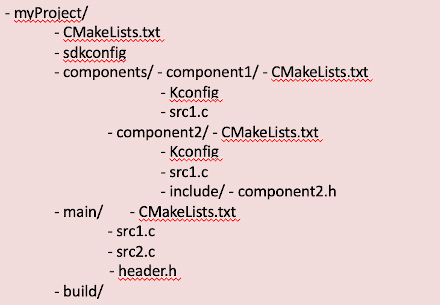

Práctica 6. Componentes y NVS
Esta práctica se desarrollará el 15 de noviembre.
Objetivos
El objetivo de esta práctica es familiarizarse con la estructura de componentes en que se basa la compilación de proyectos en ESP-IDF. Asímismo, aprovecharemos para probar la partición NVS. Trabajaremos los siguientes aspectos:
- Creación de componentes en nuestro proyecto.
- Incorporar componentes externos.
- Crear pares clave-valor en una partición NVS.
- Uso del componente
consolepara tener un entorno interactivo.
Material de consulta
- Documentación sobre el sistema de compilación
- Documentación sobre la librería NVS
- Documentación del componente
console - Documentación sobre la librería Argtable
- Documentación sobre CMake
Proyectos ESP-IDF
Tal y como hemos visto en clase, un proyecto ESP-IDF está formada de componentes.
un componente es la unidad en la que se organiza el código en un proyecto ESP-IDF. Cada componente se compila formando una librería estática, que posteriormente se enlazará junto al resto de componentes y al kernel de ESP-IDF para crear la aplicación. El código que incluyamos en la carpeta main no es más que otro componente, con pequeños matices que lo diferencian de otros.
Los elementos principales en ESP-IDF son:
- Proyecto. Un directorio que contiene todos los ficheros y configuración para construir un “app” (ejecutable). Incluye elementos como tabla de partición, sistemas de ficheros y bootloader
- Configuración de proyecto. Se mantiene en el fichero sdkconfig en el directorio raíz del proyecto. Se modifica a través de menuconfig. Cada proyecto tiene un único fichero de configuración.
- app. Es un ejecutable resultado de la compilación/enlazado. De un proyecto se suelen crear 2 apps
- Project app: el ejectuable principal con nuestro código
- Bootloader app: el programa inicial que se encarga de cargar nuestro código
- Componentes. Partes modulares del código que se compilan como librearías estáticas (ficheros .a) y se enlazan en la app. Algunos componentes los proporciona ESP-IDF, pero pueden ser externos https://components.espressif.com/ (aún no público)
- Target. Es el hardware para el que construimos la aplicación. Podemos comprobar los targets disponibles para una versión de ESP-IDF con el comando
idf.py -list-targets
La compilación se basa en la herramienta CMake, por lo que tendremos un fichero CMakeLists.txt para cada componente, y uno general para el proyecto. Así, la estructura general de un proyecto podría ser similar a:

El contenido mínimo del fichero CMakeLists.txt del proyecto (el que se encuentra en la carpeta myProject en el ejemplo anterior) es:
cmake_minimum_required(VERSION 3.5)
include($ENV{IDF_PATH}/tools/cmake/project.cmake)
project(si7021)
Componentes
Un componente es cualquier directorio en COMPONENT_DIRS que contenga un fichero CMakeLists.txt. Puede ser un directorio sin CMakeLists.txt pero con subdirectorios, cada uno de ellos con su CMakeLists.txt. Se creará una librería estática para cada componente, cuyo nombre será, por defecto, el nombre del directorio. Cada componente puede, asimismo, tener su propio fichero Kconfig.
El fichero CMakeLists.txt debe indicar las fuentes que se enlazarán en la librería y la ubicación de los ficheros de cabecera públicos del componente. Asimismo, puede indicar dependencias con otros componentes (si las hubiera)
idf_component_register(SRCS "foo.c" "bar.c"
INCLUDE_DIRS "include"
REQUIRES mbedtls
)
La variable COMPONENT_DIRS indica los directorios en los que ESP-IDF buscará componentes. Creará bibliotecas para todos aquellos componentes que encuentre. Por defecto buscará en:
IDF_PATH/componentsPROJECT_DIR/componentesEXTRA_COMPONENT_DIRS
Es posible reescribir la variable COMPONENT_DIRSpara incluir algún directorio o, especialmente, para limitar la búsquda de directorios.
La variable EXTRA_COMPONENT_DIRS nos permite incluir directorios adicionales en la búsqueda de componentes. Las rutas pueden ser absolutas o relativas al directorio del proyecto. Se indica en el top-level CMakeLists.txt, antes del include.
La variable COMPONENTS permita hacer explícita la lista de componentes que queremos incluir en el proyecto. Como decíamos anteriormente, por defecto serán todos aquellos que se encuentren en COMPONENT_DIRS. Su uso permite reducir el tamaño del binario final, lo que puede resultar conveniente en muchos proyectos.
Librería NVS
La librería Non-volatile storage (NVS) está diseñada para almacenar pares clave-valor en memoria flash (soporte no volátil). Resulta muy útil para mantener determinados parámetros de diferentes módulos de nuestra aplicación, que queremos mantener almacenados entre diferentes arranques de nuestro sistema.
Para utilizar la librería es necesario disponer de una partición de tipo NVS en nuestro dispositivo flash. Una partición es una porción del dispositivo de almacenamiento (flash en nuestro caso) a la que daremos una identidad específica. Por ejemplo, una partición contendrá la lista de pares clave-valor tal y como los organiza la librería NVS. Otra partición puede contener un sistema de ficheros basado en FAT, para que podamos almacenar información y distribuirla en ficheros y directorios.
En la zona inicial de la flash se ubicará la tabla de particiones que indica qué particiones tendremos en nuestro dipositivo y de qué tamaño y tipo son cada una de ellas.
Aplicación Consola
En muchos entornos resulta muy conveniente tener una aplicación de tipo consola: un intérprete de comandos que nos permita interaccionar de forma básica con el sistema. Muchos sistemas empotrados tienen la opción de arrancar en modo consola, para tareas de mantenimiento y depuración. En funcionamiento normal la consola no se ejecutará o se saldrá de dicho modo transcurrido un tiempo de inactividad, arrancándose entonces la aplicación real.
ESP-IDF incluye un componente llamado Console que nos da un servicio mínimo tipo REPL (Read-Evaluate-Print-Loop) El componente incluye toda la funcionalidad necesaria para el procesamiento/eidción de línea, basándose en la librería lineoise. De ese modo, sabe interpretar la acción de borrado, movimiento por cursores, auto completa, indica el formato de cada comando... Asimismo, tiene funciones para que sea sencillo registrar nuevos comandos escritos por nosotros mismos.
Ejercicios básicos
Vamos a partir del ejemplo de consola básico. Estudia el código, y responde a las siguientes preguntas:
Cuestión
- ¿Qué componente se está incluyendo además de los que siempre se incluyen por defecto?
- ¿Qué funcionalidad se importa de dicho componente?
- ¿Qué particiones se crean al volcar el proyecto en nuestro dispositivo?
Tareas
- Crea dos nuevos componentes en el proyecto creado a partir del ejemplo. Uno de ellos tendrá al menos una función
int get_hall_read()que proporcionará una lectura del sensor de efecto Hall. El otro tendrá al menos una funciónint get_temperature()que deolverá la temperatura medida en grados Celsius obtenida del sensor Si7021. Los componentes podrán tener más funciones, tanto públicas como privadas. Antes de comenzar el REPL (que comienza con la llamadaesp_console_start_repl()) se deberá mostrar por terminal una lectura de cada sensor. - Respecto al ejemplo de consola, evita que se registren comandos relaciondos con WiFi.
- Crea un nuevo namespace en la partición NVS, y crea una variable de tipo entero sin signo de 8 bits (
uint8_t)con valor 7. Lista el contenido de las variables y comprueba que efectivamente aparece.
Ejercicio avanzado
Tareas
- Incluye dos nuevos comandos en la consola:
get_hallyget_tempque muestren por pantalla una lectura del sensor de efecto Hall y la temperatura, respectivamente. - Trata de reducir el tamaño del binario generado alterando el valor de la variable
COMPONENTS
Se recomienda consultar el ejemplo de i2c_tools para comprobar cómo incluir comandos.